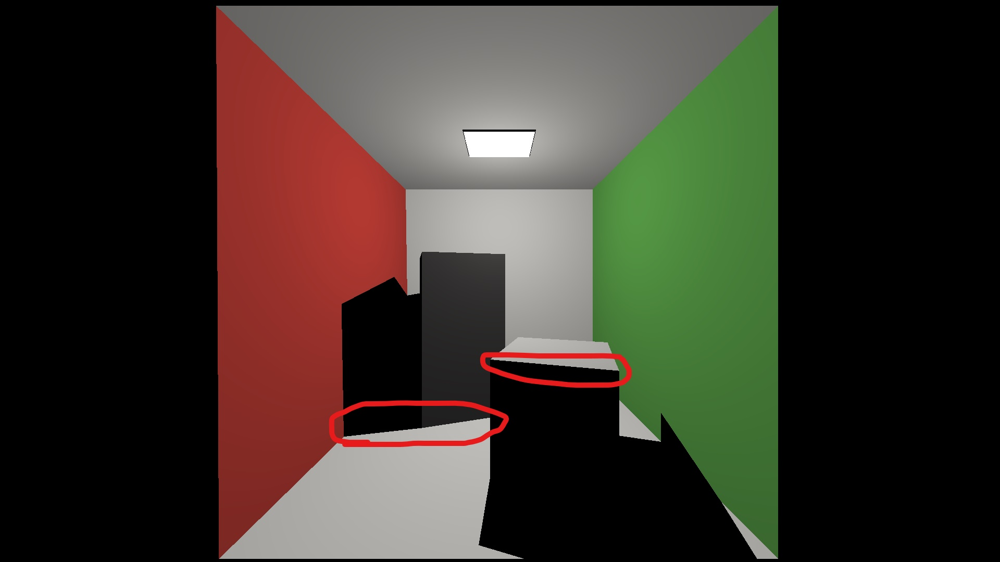

Lecture 10: Anti-aliasing
Computer graphics in Game development
Ivan Belyavtsev
05.02.2022
Aliasing issue

Kotelnikov theorem (aka Nyquist–Shannon sampling theorem)
If a function \(x(t)\) contains no frequencies higher than \(B\) hertz, it is completely determined by giving its ordinates at a series of points spaced \(1/2B\) seconds apart. [1]
Super-sampling anti-aliasing
- Trace 4 uniform rays per pixel
- Blend resulted colors [2]
Temporal anti-aliasing for rasterization
- Render scene with subpixel jitter
- Reproject the pixel to world-space using depth buffer
- Use world space to find previous screen space position
- Offset previous position using motion vectors
- Use this to look up the previous color
- Blend resulting colors with the previous result[3]
Halton sequence
Halton sequence is a quasi-random number sequence which actively use for Monte-Carlo simulation. [4]
{kind=link}
Halton sequence generator
float2 result{0.0f, 0.0f};
constexpr int base_x = 2;
int index = frame_id + 1;
float inv_base = 1.0f / base_x;
float fraction = inv_base;
while (index > 0)
{
result.x += (index % base_x) * fraction;
index /= base_x;
fraction *= inv_base;
}
constexpr int base_y = 3;
index = frame_id + 1;
inv_base = 1.0f / base_y;
fraction = inv_base;
while (index > 0)
{
result.y += (index % base_y) * fraction;
index /= base_y;
fraction *= inv_base;
}
return result - 0.5f;[5]
Temporal anti-aliasing for ray tracing
- Find the next jitter value
- Cast camera rays with the jitter
- Blend the result image with the previous one
Gamma-correction
During accumulation you’ll find the intensity of the light is reducing proportional the number of accumulated frames. To compensate the energy lost lets apply a gamma-correction.
\[{GammaRGB}={LinearRGB}^{\frac{1}{\gamma}}\]
[6]
Off topic
public static Matrix4x4 GetJitteredPerspectiveProjectionMatrix(Camera camera, Vector2 offset)
{
float near = camera.nearClipPlane;
float far = camera.farClipPlane;
float vertical = Mathf.Tan(0.5f * Mathf.Deg2Rad * camera.fieldOfView) * near;
float horizontal = vertical * camera.aspect
offset.x *= horizontal / (0.5f * camera.pixelWidth);
offset.y *= vertical / (0.5f * camera.pixelHeight);
var matrix = camera.projectionMatrix;
matrix[0, 2] += offset.x / horizontal;
matrix[1, 2] += offset.y / vertical;
return matrix;
}Lab: Anti-aliasing
- Implement
get_jittermethod ofraytracerclass - Add
historyresource inraytracerclass - Implement TAA in
ray_generationmethod ofraytracerclass - (Bonus) Adjust
closest_hit_shaderfor Monte-Carlo light tracing
Homework
- Implement all ray tracing labs
- Mark your final commit with
raytracingtag - Push your implementation and the
raytracingtag - Make sure that an instructor has access to your repo (djbelyak on github)
- Submit your implementation in Moodle with the repo URL
Due date: Friday, 18 February 2022, 12:00 AM
References
1.
Kotel’nikov V.A. On the transmission capacity of ’ether’ and wire in electric communications // Usp. Fiz. Nauk. Uspekhi Fizicheskikh Nauk, 2006. Vol. 176, № 7. P. 762–770.
2.
Shirley P. Ray tracing in one weekend. second. Amazon.com Services LLC, 2019. Vol. 1.
3.
Karis B. High quality temporal anti-aliasing [Electronic resource]. 2014. URL: https://de45xmedrsdbp.cloudfront.net/Resources/files/TemporalAA_small-59732822.pdf.
4.
Halton J.H. Algorithm 247: Radical-inverse quasi-random point sequence // Commun. ACM. New York, NY, USA: Association for Computing Machinery, 1964. Vol. 7, № 12. P. 701–702.
5.
NVIDIA. NVIDIA DLSS [Electronic resource]. 2018. URL: https://developer.nvidia.com/dlss.
6.
McKesson J.L. Linearity and gamma [Electronic resource] // Learning modern 3D graphics programming. 2015. URL: https://paroj.github.io/gltut/index.html.